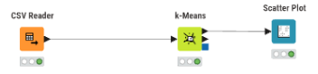
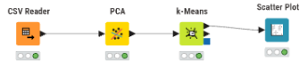
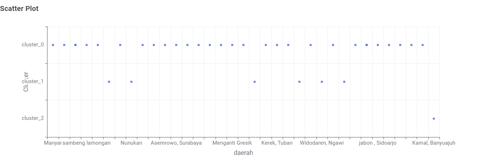
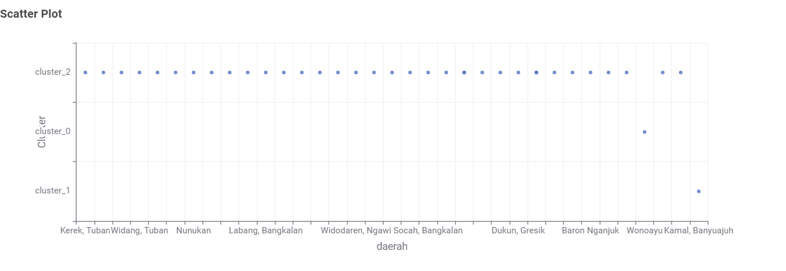
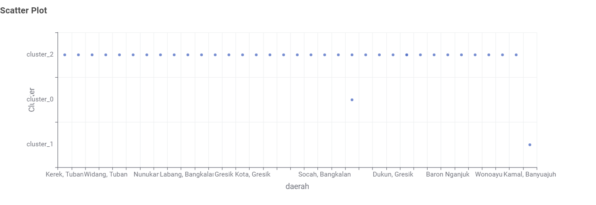

K-Means Clustering Polutan#
Dokumen ini menjelaskan proses pengelompokan (clustering) area berdasarkan karakteristik deret waktu polutan NO2, SO2, dan CO. Data ekstraksi fitur menggunakan TSFEL dikumpulkan dari seluruh daerah bersama teman sekelas, kemudian diproses menggunakan algoritma K-Means dengan jumlah klaster K=3.
Setiap polutan diuji dalam dua skenario: tanpa reduksi dimensi (Non-PCA) dan dengan reduksi dimensi PCA (68 fitur → 37 komponen utama), sehingga kita dapat membandingkan apakah PCA memengaruhi distribusi dan kualitas klaster yang terbentuk.
Alur Kerja (Workflow) KNIME#
Eksperimen ini menggunakan dua workflow berbeda di KNIME, masing-masing untuk skenario tanpa dan dengan PCA.
Workflow Tanpa PCA#

Penjelasan fungsi setiap node:
CSV Reader: Membaca file CSV hasil ekstraksi fitur (
ekstraksi_fitur_[polutan].csv) langsung ke dalam environment KNIME. File ini berisi kolom identitas (id,nama,daerah) dan 68 kolom fitur statistik hasil ekstraksi TSFEL.k-Means: Algoritma inti yang membagi seluruh data ke dalam K=3 kelompok berdasarkan kedekatan jarak Euclidean antar titik fitur. Karena tidak ada preprocessing reduksi dimensi, K-Means bekerja langsung pada ruang fitur berdimensi 68.
Scatter Plot: Memvisualisasikan hasil pengelompokan. Sumbu X menampilkan nama daerah dan sumbu Y menampilkan label cluster yang ditetapkan, sehingga distribusi tiap daerah ke klasternya terlihat jelas.
Workflow Dengan PCA#

Penjelasan fungsi setiap node:
CSV Reader: Membaca file CSV hasil ekstraksi fitur, sama seperti workflow non-PCA.
PCA (Principal Component Analysis): Mereduksi dimensi data dari 68 fitur asli menjadi 37 komponen utama (Principal Components). PCA bekerja dengan mentransformasikan fitur-fitur yang berkorelasi tinggi menjadi variabel baru yang ortogonal (tidak saling berkorelasi). Penerapan PCA di sini berguna untuk mengatasi curse of dimensionality sehingga perhitungan jarak pada K-Means menjadi lebih representatif, mengurangi beban komputasi, dan menyaring noise dari fitur yang tidak relevan.
k-Means: Menjalankan algoritma clustering pada 37 komponen PCA hasil reduksi. Daerah dengan pola polusi serupa menempati klaster yang sama.
Scatter Plot: Visualisasi hasil clustering, identik dengan workflow non-PCA.
Polutan NO2#
Tanpa PCA#
Scatter Plot KNIME (NO2 — Tanpa PCA):

Implementasi Python:
---------------------------------------------------------------------------
KeyboardInterrupt Traceback (most recent call last)
Cell In[1], line 3
1 import pandas as pd
2 import matplotlib.pyplot as plt
----> 3 from sklearn.cluster import KMeans
4 from sklearn.preprocessing import StandardScaler
6 CSV_PATH = "ekstraksi_fitur_no2.csv"
File C:\laragon\bin\python\python-3.10\lib\site-packages\sklearn\cluster\__init__.py:16
14 from ._birch import Birch
15 from ._bisect_k_means import BisectingKMeans
---> 16 from ._dbscan import DBSCAN, dbscan
17 from ._hdbscan.hdbscan import HDBSCAN
18 from ._kmeans import KMeans, MiniBatchKMeans, k_means, kmeans_plusplus
File C:\laragon\bin\python\python-3.10\lib\site-packages\sklearn\cluster\_dbscan.py:16
14 from ..base import BaseEstimator, ClusterMixin, _fit_context
15 from ..metrics.pairwise import _VALID_METRICS
---> 16 from ..neighbors import NearestNeighbors
17 from ..utils._param_validation import Interval, StrOptions, validate_params
18 from ..utils.validation import _check_sample_weight, validate_data
File C:\laragon\bin\python\python-3.10\lib\site-packages\sklearn\neighbors\__init__.py:18
16 from ._kde import KernelDensity
17 from ._lof import LocalOutlierFactor
---> 18 from ._nca import NeighborhoodComponentsAnalysis
19 from ._nearest_centroid import NearestCentroid
20 from ._regression import KNeighborsRegressor, RadiusNeighborsRegressor
File C:\laragon\bin\python\python-3.10\lib\site-packages\sklearn\neighbors\_nca.py:22
14 from scipy.optimize import minimize
16 from ..base import (
17 BaseEstimator,
18 ClassNamePrefixFeaturesOutMixin,
19 TransformerMixin,
20 _fit_context,
21 )
---> 22 from ..decomposition import PCA
23 from ..exceptions import ConvergenceWarning
24 from ..metrics import pairwise_distances
File C:\laragon\bin\python\python-3.10\lib\site-packages\sklearn\decomposition\__init__.py:11
7 # Authors: The scikit-learn developers
8 # SPDX-License-Identifier: BSD-3-Clause
10 from ..utils.extmath import randomized_svd
---> 11 from ._dict_learning import (
12 DictionaryLearning,
13 MiniBatchDictionaryLearning,
14 SparseCoder,
15 dict_learning,
16 dict_learning_online,
17 sparse_encode,
18 )
19 from ._factor_analysis import FactorAnalysis
20 from ._fastica import FastICA, fastica
File C:\laragon\bin\python\python-3.10\lib\site-packages\sklearn\decomposition\_dict_learning.py:21
13 from scipy import linalg
15 from ..base import (
16 BaseEstimator,
17 ClassNamePrefixFeaturesOutMixin,
18 TransformerMixin,
19 _fit_context,
20 )
---> 21 from ..linear_model import Lars, Lasso, LassoLars, orthogonal_mp_gram
22 from ..utils import check_array, check_random_state, gen_batches, gen_even_slices
23 from ..utils._param_validation import Interval, StrOptions, validate_params
File C:\laragon\bin\python\python-3.10\lib\site-packages\sklearn\linear_model\__init__.py:35
25 from ._huber import HuberRegressor
26 from ._least_angle import (
27 Lars,
28 LarsCV,
(...)
33 lars_path_gram,
34 )
---> 35 from ._logistic import LogisticRegression, LogisticRegressionCV
36 from ._omp import (
37 OrthogonalMatchingPursuit,
38 OrthogonalMatchingPursuitCV,
39 orthogonal_mp,
40 orthogonal_mp_gram,
41 )
42 from ._passive_aggressive import PassiveAggressiveClassifier, PassiveAggressiveRegressor
File C:\laragon\bin\python\python-3.10\lib\site-packages\sklearn\linear_model\_logistic.py:23
21 from ..model_selection import check_cv
22 from ..preprocessing import LabelBinarizer, LabelEncoder
---> 23 from ..svm._base import _fit_liblinear
24 from ..utils import (
25 Bunch,
26 check_array,
(...)
29 compute_class_weight,
30 )
31 from ..utils._param_validation import Hidden, Interval, StrOptions
File C:\laragon\bin\python\python-3.10\lib\site-packages\sklearn\svm\__init__.py:10
3 # See http://scikit-learn.sourceforge.net/modules/svm.html for complete
4 # documentation.
5
6 # Authors: The scikit-learn developers
7 # SPDX-License-Identifier: BSD-3-Clause
9 from ._bounds import l1_min_c
---> 10 from ._classes import SVC, SVR, LinearSVC, LinearSVR, NuSVC, NuSVR, OneClassSVM
12 __all__ = [
13 "SVC",
14 "SVR",
(...)
20 "l1_min_c",
21 ]
File C:\laragon\bin\python\python-3.10\lib\site-packages\sklearn\svm\_classes.py:13
11 from ..utils.multiclass import check_classification_targets
12 from ..utils.validation import _num_samples, validate_data
---> 13 from ._base import BaseLibSVM, BaseSVC, _fit_liblinear, _get_liblinear_solver_type
16 def _validate_dual_parameter(dual, loss, penalty, multi_class, X):
17 """Helper function to assign the value of dual parameter."""
File C:\laragon\bin\python\python-3.10\lib\site-packages\sklearn\svm\_base.py:32
29 # mypy error: error: Module 'sklearn.svm' has no attribute '_libsvm'
30 # (and same for other imports)
31 from . import _libsvm as libsvm # type: ignore[attr-defined]
---> 32 from . import _libsvm_sparse as libsvm_sparse # type: ignore[attr-defined]
34 LIBSVM_IMPL = ["c_svc", "nu_svc", "one_class", "epsilon_svr", "nu_svr"]
37 def _one_vs_one_coef(dual_coef, n_support, support_vectors):
File <frozen importlib._bootstrap>:404, in parent(self)
KeyboardInterrupt:
Dengan PCA#
Scatter Plot KNIME (NO2 — Dengan PCA):

Implementasi Python:
Perbandingan dan Interpretasi NO2#
Baik tanpa PCA maupun dengan PCA, hasil clustering NO2 menghasilkan distribusi yang identik — nilai inertia sama (1001.2819) dan pembagian daerah ke klaster tidak berubah sama sekali. Ini menunjukkan bahwa 37 komponen PCA sudah menangkap hampir seluruh varians penting dari 68 fitur asli, sehingga informasi yang hilang saat reduksi dimensi tidak berdampak pada keputusan clustering.
Dari scatter plot, tiga kelompok terbentuk dengan karakteristik berikut:
Cluster 0 (20 daerah) — kelompok terbesar, memuat daerah dengan pola polusi NO2 yang paling umum dan stabil. Daerah seperti Manyar, Asemrowo Surabaya, Menganti Gresik, hingga Kwanyar Bangkalan masuk di sini. Fluktuasi NO2 di daerah-daerah ini bergerak dalam rentang yang serupa sepanjang periode observasi.
Cluster 2 (16 daerah) — kelompok menengah dengan pola polusi yang sedikit berbeda dari mayoritas. Daerah seperti Cerme Gresik, Widodaren Ngawi, Wonoayu, dan Nunukan menunjukkan karakteristik time-series NO2 yang homogen satu sama lain namun berbeda dari cluster 0.
Cluster 1 (1 daerah) — Kamal, Banyuajuh berdiri sendiri secara terisolasi. Karakteristik pergerakan NO2 di titik ini sama sekali tidak menyerupai daerah manapun dalam dataset, mengindikasikan adanya sumber emisi lokal yang spesifik di wilayah tersebut.
Polutan SO2#
Tanpa PCA#
Scatter Plot KNIME (SO2 — Tanpa PCA):

Implementasi Python:
Dengan PCA#
Scatter Plot KNIME (SO2 — Dengan PCA):

Implementasi Python:
Perbandingan dan Interpretasi SO2#
Clustering SO2 juga menghasilkan hasil yang identik antara skenario non-PCA dan PCA (inertia 691.6448). Distribusi klasternya membentuk pola yang jauh lebih ekstrem dibanding NO2:
Cluster 0 (35 daerah) — hampir seluruh daerah dalam dataset masuk ke satu kelompok besar. Fluktuasi SO2 di sebagian besar wilayah memiliki profil deret waktu yang sangat seragam. Daerah mulai dari Kerek Tuban, Cerme Gresik, Asemrowo Surabaya, hingga Kwanyar Bangkalan semuanya berbagi pola yang sama.
Cluster 1 (1 daerah) — Kamal, Banyuajuh kembali terisolasi, konsisten dengan temuan pada NO2. Lokasi ini menjadi anomali pada dua polutan sekaligus, yang memperkuat dugaan adanya sumber emisi khusus di kawasan tersebut.
Cluster 2 (1 daerah) — Kamal, Bangkalan berdiri sendiri di klaster tersendiri. Dua titik observasi di sekitar wilayah Kamal (Banyuajuh dan Bangkalan) keduanya memisahkan diri dari massa utama, meski keduanya tidak saling berkelompok. Area Kamal secara keseluruhan menunjukkan dinamika SO2 yang berbeda dari wilayah lain dalam dataset.
Polutan CO#
Tanpa PCA#
Scatter Plot KNIME (CO — Tanpa PCA):

Implementasi Python:
Dengan PCA#
Scatter Plot KNIME (CO — Dengan PCA):

Implementasi Python:
Perbandingan dan Interpretasi CO#
Clustering CO menghasilkan distribusi yang identik antara non-PCA dan PCA (inertia 660.2141). Pola yang terbentuk serupa dengan SO2:
Cluster 1 (35 daerah) — mayoritas besar daerah masuk ke satu kelompok dominan. Karakteristik deret waktu CO di daerah-daerah ini sangat homogen: Kerek Tuban, Cerme Gresik, Asemrowo Surabaya, Widodaren Ngawi, dan puluhan daerah lainnya menunjukkan fluktuasi CO dalam kisaran yang sebanding.
Cluster 0 (1 daerah) — Kamal, Bangkalan berdiri sendiri. Ada aktivitas emisi CO yang terjadi di daerah ini dan tidak ditemukan di daerah manapun dalam dataset.
Cluster 2 (1 daerah) — Kamal, Banyuajuh kembali muncul sebagai anomali tersendiri. Konsistensinya sebagai outlier di ketiga polutan (NO2, SO2, CO) menjadikan titik ini sebagai lokasi observasi paling unik dalam keseluruhan dataset.
Kesimpulan#
Dari seluruh eksperimen clustering K-Means dengan K=3 pada tiga polutan, tiga poin utama yang dapat ditarik:
PCA tidak mengubah hasil clustering. Di ketiga polutan, nilai inertia dan distribusi daerah ke klaster identik antara skenario non-PCA dan PCA. Ini terjadi karena 37 komponen PCA yang dipilih sudah merepresentasikan hampir seluruh varians dari 68 fitur asli. Meski hasilnya sama, PCA tetap bermanfaat karena mereduksi beban komputasi dan menghilangkan fitur-fitur yang berkorelasi tinggi — keuntungan yang lebih terasa signifikan bila dataset lebih besar.
Kamal, Banyuajuh adalah anomali konsisten. Titik observasi ini terisolasi di klaster tersendiri pada ketiga polutan. Tidak ada daerah lain dalam dataset yang menunjukkan pola serupa, baik untuk NO2, SO2, maupun CO. Ini sinyal kuat bahwa ada karakteristik emisi yang sangat spesifik di lokasi tersebut yang layak ditelusuri lebih lanjut.
Pola polusi SO2 dan CO lebih seragam dibanding NO2. Pada SO2 dan CO, satu klaster mendominasi dengan 35 dari 37 daerah. NO2 terbagi lebih merata menjadi 20 dan 16 daerah. Variasi karakteristik deret waktu NO2 antar daerah lebih tinggi — daerah-daerah memiliki profil NO2 yang lebih beragam dibanding dua polutan lainnya.